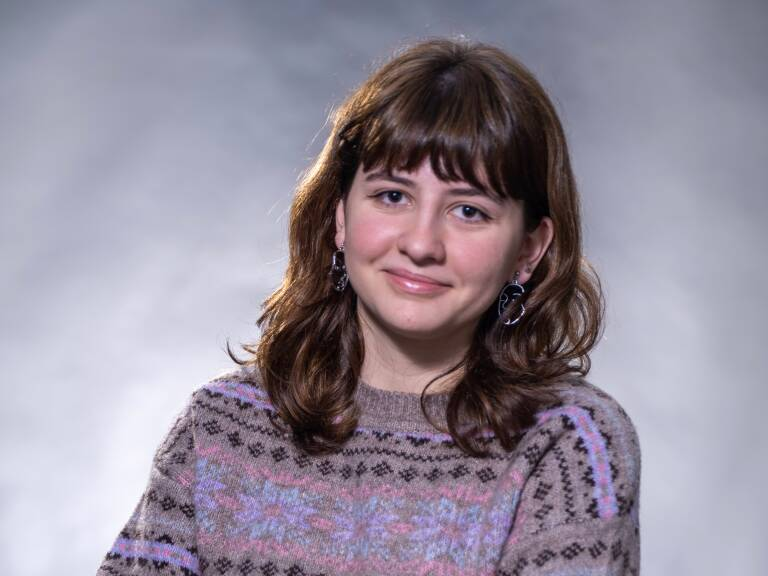
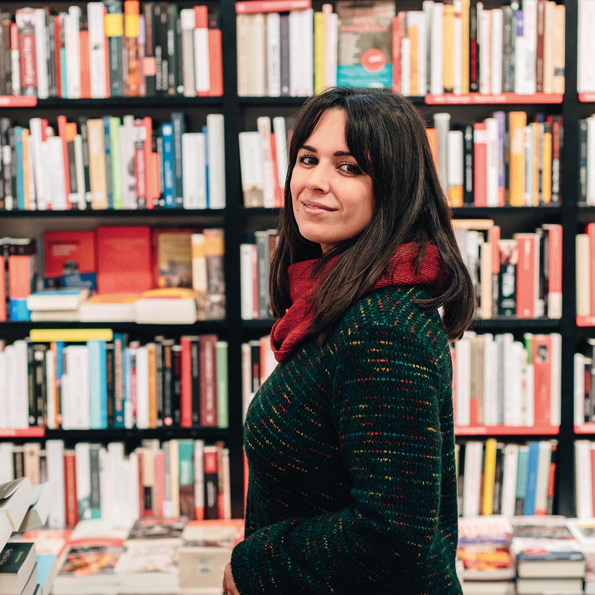

Joana Marcús
 Libros destacadosJoana Marcús Sastre nació en Mallorca el 30 de junio del 2000. Es una escritora española de fantasía, ciencia ficción y romance juvenil. Se inició como escritora en la plataforma digital de lectura y escritura Wattpad a los 13 años donde es la única española en el top mundial. En dos ocasiones ha sido ganadora de los Premios Wattys por sus novelas Irresistible propuesta en 2016 y Ciudades de humo en 2019. Es una de las autoras más jóvenes en conseguir un éxito de ventas a nivel internacional. En 2021 Antes de diciembre se posicionó entre las 10 novelas más vendidas en diversos países. En el 2022, fue la autora más vendida solo detrás de los libros de Harry Potter. Viajó por diversos países y ciudades para promocionar sus historias. Por ejemplo en Madrid, donde colapsó la Gran Vía, y México, donde reunió a cientos de lectores en la FIL de Guadalajara.
Alice Kellen
 Libros destacadosAlice Kellen nació en Valencia en 1989. Es una escritora española de literatura romántica juvenil y adulta. Comenzó su carrera como escritora en 2013 con Llévame a cualquier lugar y ha seguido publicando hasta la actualidad, contando ya con quince libros en el mercado. Quiso estudiar Historia del Arte, pero al no obtener suficiente nota en la prueba de Selectividad, empezó a estudiar Filología Española, carrera que la decepcionó y abandonó en poco tiempo. Tras abandonar los estudios universitarios, empezó una empresa de marketing con su marido, y no fue hasta la publicación de su primer libro, que empezó a dedicarse de forma exclusiva a la escritura. Su primera novela se titula Llévame a cualquier lugar, una comedia romántica que publicó en Amazon en 2013 y consiguió posicionarse como uno de los libros más vendidos, hecho que llamó la atención de varias editoriales, entre ellas NEO, que publicó la novela bajo su sello al año siguiente. Aunque ya estaba en contacto con la editorial New Adult, Alice siguió auto publicándose, y algunas de sus novelas vieron la luz bajo otros sellos editoriales, como Titania, hasta que finalmente se estableció bajo el sello editorial Planeta. Su obra ha sido traducida a una decena de idiomas.
Mercedes Ron
 Libros destacados
Libros destacados
Mercedes Ron López nació en Buenos Aires el 1 de junio de 1993. Es una escritora y comunicadora audiovisual argentina con nacionalidad española. Alcanzó su popularidad gracias a la plataforma de Wattpad, con la trilogía Culpables (2017 - 2018), principalmente por su novela Culpa Mía, que actualmente cuenta con más de 100 mil ejemplares vendidos, y su propia película producida por Amazon Prime Vídeo (2023). Un año después de Culpa Nuestra (tercer libro de Culpables), publicó la bilogía Enfrentados (2019), y otro año después publicó la trilogía Dímelo (2020 - 2021). Sus publicaciones más recientes son 30 Sunsets para Enamorarte y 10.000 Millas para Encontrarte, de la saga Bali.